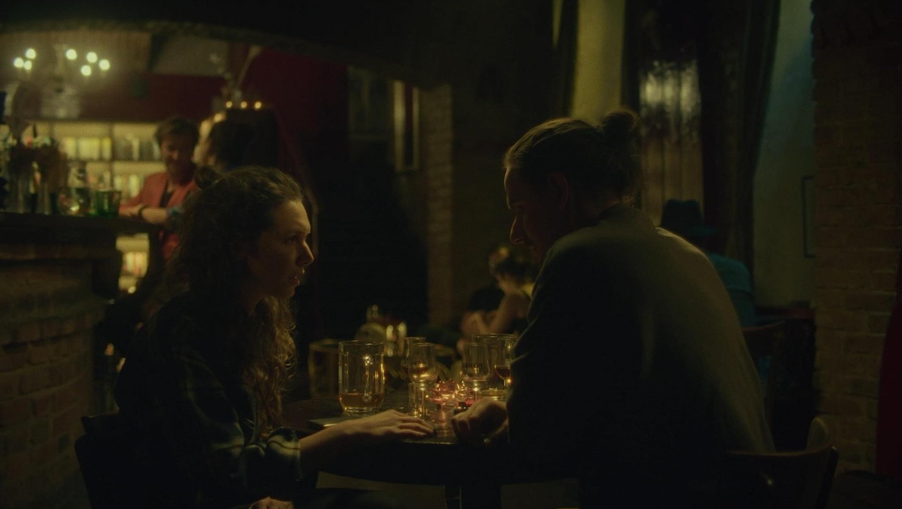
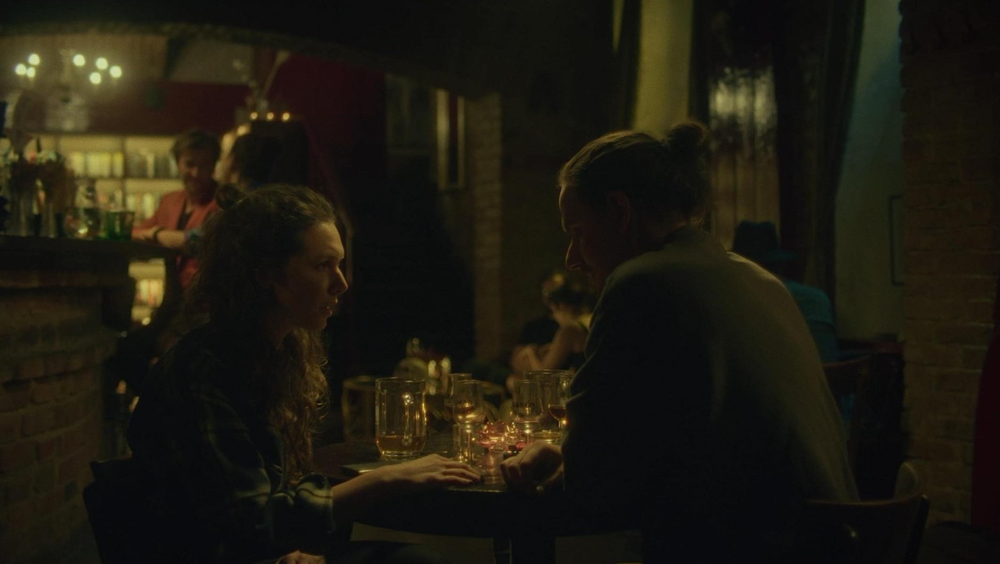

Untold Pieces
Fiction, Short Film, 15′ Stereo Czechia.
Post Production, Original Score, 2022.
Directed by Alexandr Borecky & Jan Sedlácek, produced by Yasmine Najime & Alexandr Borecky.
More info here.
This is my second collaboration with Alexandr since Origin (2021); which can be seen here. This one posed a much greater challenge as its confined to one location, broken up into two sequences. To maintain a soundscape which is always moving but still fairly stable took the most time. I drew floor plans for characters off-screen to create a sonic arc for them. For instance, where is the bartender? What do they do? How do they move? A similar approach was used for every background character. Once this living layer of the bar was established came the subjective perception of this by the main character. Including filtering, and time-stretching to perform temporal percpetions. This is most prominently featured in a scene where the main character experiences a could-be panic attack.
The music was placed diegetically in the bar as a piano concert in another room of this place. Mostly my compositions, except for the last piece that moves us into the end credits, that one is by Alexandr.
 
